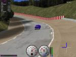
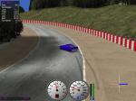
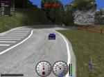
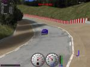
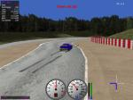
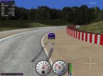
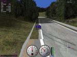

5.6 Setup the Car
Introduction
In this section we will set up the car bt 1 for the qualifying on g-track-3. The goal is that you get a feeling for the parameters you can change. I don't recommend you to put too much effort in car setups yet, because if you modify the driver or write one from scratch it will not need the same setups. We do the test runs in the practice mode, set laps to 2 and display to normal so that you can analyse the behaviour. You will need to edit the file "0/practice/g-track-3.xml" (relative to the bt directory). To deploy the changed setup you have to run "make install" from the directory "0/practice".
Test Drive 1
First we run a test without any changes. The lap time is 1:08:86.
|  |  |

|
 |
| Picture 1 | Picture 2 | Picture 3 | Picture 4 |
You can see on picture 1 the heavy understeering of the car in this narrow turn. It
happens in
the acceleration part of it, so we can conclude that the "Limited Slip"
differential on the
driven rear wheels disallows us to pass the turn. So we will set the differential to
type "Free".
On picture 2 you can see the result of the understeering. The car leaves the track
and starts skidding.
On picture 3 you can see the skidmarks form the braking before the turn. You can
conclude that the braking balance or pressure is not set up correct. Perhaps
we have to move the braking balance towards the rear wheels or to reduce the
pressure.
Finally on picture 4 you can see "classic" understeering. It's a quite wide turn, so
the main cause is probably not enough grip on the front wheels. We can fix that with
setting the camber to the minimum value and with proper suspension setup. Perhaps
we have to reduce the angle of attack of the rear wing (rebember our speed limit
computation). Now make the following changes in the setup file (0/practice/g-track-3.xml)
and deploy it (make install).
- Set the differential to type "FREE".
- Set camber of the left and right front wheel to -5.
Test Drive 2
The resulting lap time is 1:07:85, that's 1.01 seconds faster than the previous result.
|  |  |  |  |
| Picture 5 | Picture 6 | Picture 7 | Picture 8 |
Like you can see on picture 5 we pass this turn now fine without any skidmarks or other trouble. But we face a new problem on the next turn like you can see on the pictures 6, 7 and 8. If you watch the practice session carefully you can observe that the reason for this are locking front wheels. We can conclude that we have to move the braking balance toward the rear wheels and to reduce the pressure.
- Set the brakes "front-rear brake repartition" to 0.47.
- Set the "max pressure" to 9000.
Test Drive 3
The resulting lap time is 1:07:03, that's 1.83 seconds faster than the first result. The car stays now quite good on the track so you can start the refinement of the setup. After I changed the gearbox, suspension, brake and rear wing settings I got finally a 1:05:95, that's 2.88 seconds faster than the default setup. Play now with different values to get a feeling for the settings. An approach to find the optimal values is:
- Pick a parameter to optimize.
- Choose a value for the parameter, e. g. the default value.
- Measure the lap time.
- Choose a smaller value for the parameter and measure the lap time.
- Choose a larger value for the parameter and measure the lap time.
- Explore new values in the direction of the minimal lap time found.
- If the left and right values produce worse lap times you have found the best local value, choose now another parameter for optimization.
- Repeat the above till the setup is good enough.
- Finally copy the setup to the right directory.
You have also to keep an eye on the damage you get per lap. Because you drive just a few laps in the qualifying it doesn't matter if you get some damage. But for long races it can be a problem. Damage causes additional drag and if it reaches a certain limit your car is not able to drive further.
Downloads
In case you got lost, you can download my robot for TORCS 1.2.0 or later.
Feedback
Let me know if you read this chapter and your thoughts about it. Please send me also spelling, grammar, math and code corrections. Thank you for the feedback.
Summary
- You know how to setup the car.
- You have got a feeling for the different settings.